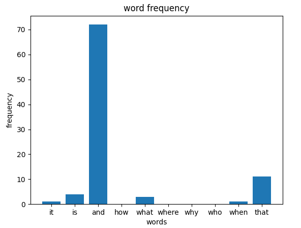

Here is a bar graph made from the word frequencies. To get this graph, I first read in a piece of text into thonny. Then, I used the list of ten common words and compared them to the piece of text using a counter and for loops. After that, I used this list of the frequencies along with the list of common words to make a bar graph.
 Here is a polygon constructed from word frequencies. To get this polygon, I first calculated the average of the word frequencies. Then, using this number, I calculated the sum of the internal angles of the shape and then divided this by the number of angles to find the measure of each individual angle. Now, I could use turtle to construct a regular polygon since I knew how many sides the shape will have and the measure of each angle.